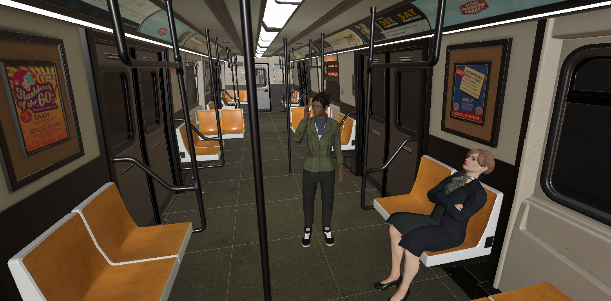
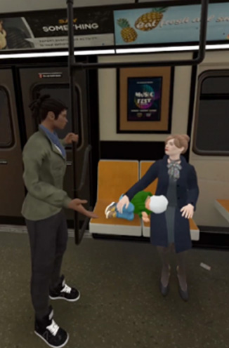
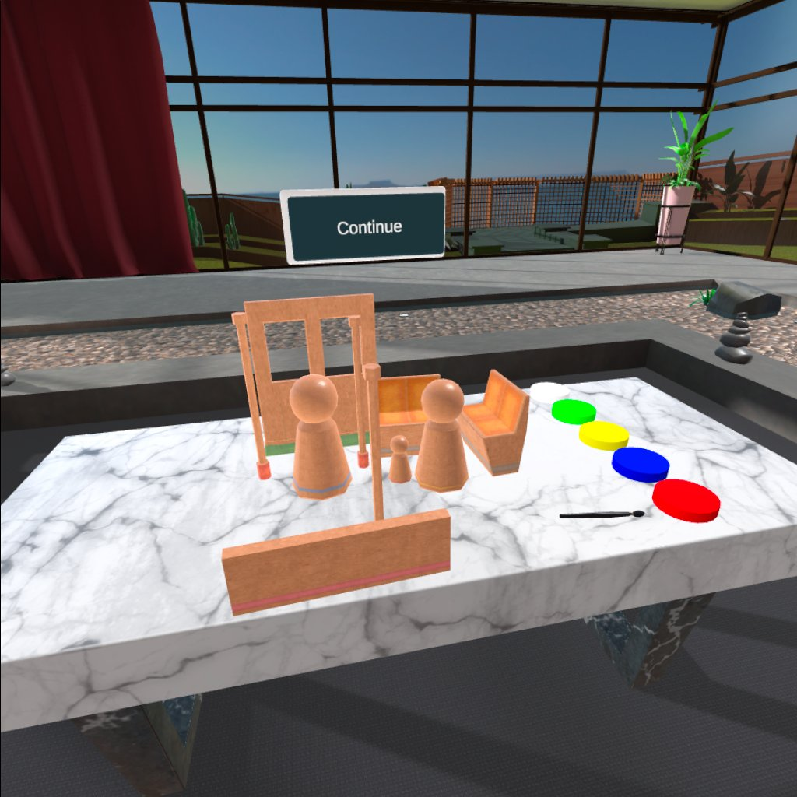
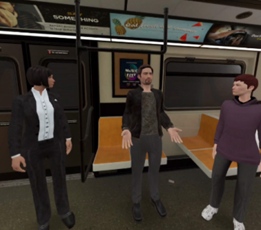

High-fidelity VR workplace simulation — experience unconscious bias, allyship, and inclusion from multiple perspectives.




DIB is an enterprise VR training simulation designed to build empathy and awareness around diversity, inclusion, and belonging in the workplace. Learners are placed inside real social scenarios — a subway commute, office interactions, team meetings — and experience situations that reveal unconscious bias in action.
The simulation uses perspective-shifting mechanics: you can experience the same event as different characters, making the abstract tangible in a way classroom or video-based training cannot replicate.
Lead programmer on a team of four. I built the character interaction systems, the perspective-switch mechanic, and the scenario state machine that drives each training module. I also handled all performance optimisation for standalone hardware.